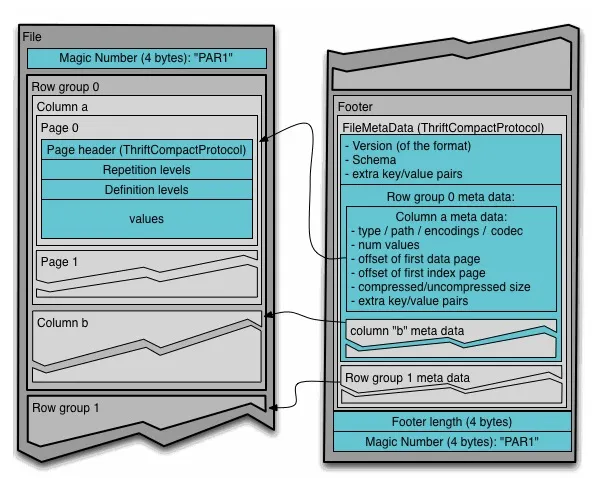
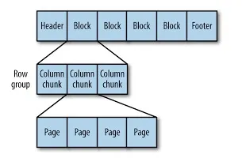

For What
AWS CUR을 가공한 서빙데이터를 MySQL에 쑤셔박으면서 처참한 성능을 현업에서 맛보았고, BigQuery 마이그레이션 결과로 개선된 성능을 직접 확인하며, 열 기반 데이터 형식의 필요성을 체감해왔다. AWS Athena, S3에서 사용하는 Parquet 형식의 데이터 외에도 Avro, Arrow 등이 존재함은 기존에 알고 있었지만, 데이터의 형태에 맞게 형식을 변경했을 때 수치적으로 얼마나 차이가 나는지 벤치마킹을 통해 직접 확인하고 싶었다. 또한 같은 열 기반이라도 Parquet과 ORC간에 사용 환경의 차이가 존재하고, Arrow는 인메모리 방식을 통해 속도의 이점을 가져가는 등 각각의 특징이 있기 때문에 이를 Deepdive하여 정확한 이해를 가져가고자 한다.
무엇보다 사람의 학습에 더 도움이 되는 것은 LLM을 통한 검색 자료 읽기보다는 직접적인 활동임을 알고 있기 때문에…
History
Row Based
Avro
Hadoop(빅데이터 분석을 위한 분산형 데이터 처리 플랫폼) 초창기, 대용량 데이터들은 CSV/JSON 형태로 데이터를 저장되었다. 하지만 CSV와 JSON은 스키마가 명확하지 않고 직렬화/역직렬화에 시간이 오래 걸리는 단점이 존재했다.
즉, 시스템 간 데이터를 주고 받을 때 스키마를 관리할 수 있으면서도 빠르게 파싱할 수 있는 포맷이 필요했다.
Avro는 데이터 자체(바이트)와 스키마(JSON의 형태 정의)를 함께 저장하는 Row 기반 포맷이다. 스키마 추가 혹은 삭제(혹은 진화, Schema Evolution) 처리에 강력하다.
한 줄(Row)씩 데이터를 처리(Read/Write)하는데 초점을 맞추어, 실시간 스트리밍(ex. Kafka) 및 MSA와 같은 환경에서 사용되는 이벤트 메시징 버스에서 거의 표준에 가깝게 사용된다.
하지만 OLAP에서 특정 속성(컬럼, attribute, series 등)을 대상으로 분석 쿼리(ex. 1년 간 평균 결제액)를 실행하려면, 전체 Row 데이터를 디스크에서 읽어와야하는데, 이는 불필요한 I/O를 유발하고 컬럼 수가 많은 경우 큰 성능 저하로 이어질 수 있다.
구조
이러한 데이터 포맷의 장점은 PL에 관계없이 직렬화/역직렬화가 가능하게 한다.
.avsc 파일에 스키마를 JSON 형태로 정의한다.
namespace(패키지), name(스키마 이름), type(Avro에서 지원하는 타입) 등 Avro 스펙에 명시된 속성을 사용해 스키마를 정의하고 이에 따라 실제 Avro binary 데이터 값으로 직렬화되는 것이다.
이때, binary 데이터 안에는 스키마가 포함되어있지 않기 때문에 데이터 수신 측에서는 스키마에 대해 미리 알고 있어야 역직렬화가 가능하다.
하지만 스키마 정보를 메시지에 압축된 데이터와 함께 보낼 경우 네트워크 낭비가 심각해지는데, 이를 해결하기 위해 Kafka에서는 스키마 레지스트리(Schema Registry)를 사용한다.
Publisher가 레지스트리에 스키마를 저장하고, 해당 스키마에 부여된 id를 메시지 헤더에 첨부하면(Magic 1Byte + Schema ID 4Bytes), Subscriber는 이를 바탕으로 레지스트리에서 스키마를 조회하여 파악할 수 있다. Confluent에서 만든 스키마 레지스트리가 많이 사용되며 직접 구현도 가능하다.
Column Based
특정 열의 Aggregation, Filtering 등 OLAP에서 사용되는 분석 쿼리에 최적화된 저장 방식으로, 전체 행이 아닌 필요한 열만 빠르게 읽어 Read I/O를 획기적으로 줄일 수 있다(Projection Pushdown).
필요한 컬럼에 대한 읽기 속도가 빠른 것은 단순히 열 데이터를 모아놓았을 뿐만이 아니라, 한 컬럼(열)은 하나의 타입을 갖기 때문에(Integer, String, …), RLE, Dictionary 압축과 같은 기법을 통해 CSV 대비 1/5수준으로 용량을 압축시킬 수 있기 때문이다.
Parquet, ORC는 사실 행/열의 장점을 결합한 Hybrid에 가깝다. 둘의 구조를 살펴보자
Parquet
트위터, Cloudera가 주도해서 개발
Nested Data를 평탄화하여, 컬럼별로 저장하는데 특화되어있다. 현재 DL/DW 생태계에서 압도적인 점유율을 가진다.
Parquet은 파일의 맨 끝(Footer)부터 역순으로 읽어 올라가도록 설계됨


Magic Bytes
PAR1 : 파일 맨 앞/뒤로 4Bytes를 차지하며 파서는 이를 통해 Parquet 파일 여부를 확인한다.
block
블럭 > 행 그룹(Row Group) > 열 청크(Column Chunk) > 페이지(Page)
순으로 구성된다.
이 블럭은 HDFS(하둡 분산 파일 시스템)의 데이터블럭을 의미하는데, 이는 파케이가 HDFS에서 사용되기 위해 구상된 파일 포맷이기 때문이다.
Row Group
수억 건 데이터를 하나의 열로 길게 늘어뜨리면 문제가 생긴다.
만약 10억 건 데이터가 있으며 특정 열은 INT64 타입, 총 8GB라고 가정
실제 데이터에서 컬럼이 하나일까?
만약 다른 3개의 열(같은 타입, 사이즈)들까지 조회하게 되면 메모리 사용량이 폭증하여 서버가 죽을 수 있다(OOM)
그래서 Row Group 개념을 두어 특정 건수(ex. 1M)만큼 데이터를 자른다.
어차피 다 조회해야하지 않냐고?
Polars, Arrow와 같은 엔진이 실제로 조회할 때는 행 그룹 단위로 나누어서 연산을 수행할 수 있다. 1M 건(32MB)만큼의 SUM, FILTER 연산 수행 후 메모리에서 지우고 다음 데이터를 가져오는 청크(Row Group) 단위 스트리밍을 사용하면 실제 활성 메모리(Active Footprint)는 MB 단위로 일정하게 유지할 수 있다.
CPU 아키텍처 관점
현대 CPU는 RAM 데이터를 고속 캐시(L1, L2, L3)를 사용해 캐싱한다.
(서버급 CPU의 L3 캐시 용량이 32~64MB라 하자)
청크 단위로 쪼개지 않으면(행 그룹이 없다면) 캐시도 공간이 모자라서 캐시 미스로 인해 RAM(DDR)으로 부터 데이터를 계속 가져와야한다. 대신에 청크 전체가 CPU 캐시에 저장되면 SIMD연산을 한 번에 처리할 수 있다.
Column Chunk
각 칼럼의 데이터를 담고 있다. 하나의 Column Chunk는 여러 타입의 페이지를 담을 수 있는데, 페이지가 최소 단위가 된다.
Footer
파케이의 뇌. 데이터 외의 현재 파케이의 모든 정보를 담는다.
메타데이터, 스키마, 행 그룹 정보, 컬럼 청크 정보, 압축 코덱, 데이터 인코딩, 사용자 메타데이터 등등
Predicate Pushdown
중요한 점은 통계정보를 여기에 담는데, 빠른 성능이 여기서 기인한다.
각 컬럼의 min/max, null count 등을 미리 계산해 저장하는데, 쿼리 엔진은 이를 활용해 특정 파일을 필터링할 수 있다
파케이를 다루기 위해
파케이를 다루려면 테이블을 데이터프레임 개념으로 다룰 수 있는 Pandas와 같은 라이브러리를 필요로 한다. 또한 대용량 파일을 읽고, 파케이를 생성하는데에 PyArrow와 같은 엔진이 필요하다. 또한 파케이를 다룰 때 기본적으로 snappy와 같은 압축기능도 필요하다 (압축률이 더 높은 gipz를 써도 되지만 압축속도가 느리다.)
ORC
Hive DB엔진에 더 극단적으로 최적화되어 압축률이 좀 더 높다